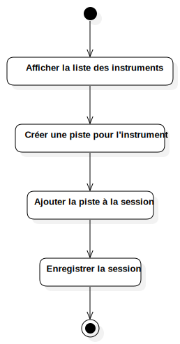

Activity
UMLActivity
JAMS — Just Another Music Studio
::
Use Case Model
::
Instrument UC
::
Add instruments to session
::
Activity
Description
Activity diagram for
Add instruments to session
use case.
Diagrams

Add instruments to session
Nodes
InitialNode1
Afficher la liste des instruments
Créer une piste pour l'instrument
ActivityFinalNode1
Enregistrer la session
Ajouter la piste à la session
Edges
(InitialNode1→Afficher la liste des instruments)
(Afficher la liste des instruments→Créer une piste pour l'instrument)
(Créer une piste pour l'instrument→Ajouter la piste à la session)
(Enregistrer la session→ActivityFinalNode1)
(Ajouter la piste à la session→Enregistrer la session)
Properties
Name
Value
name
Activity
stereotype
null
visibility
public
isReentrant
true
isReadOnly
false
isSingleExecution
false
Owned Elements
Add instruments to session